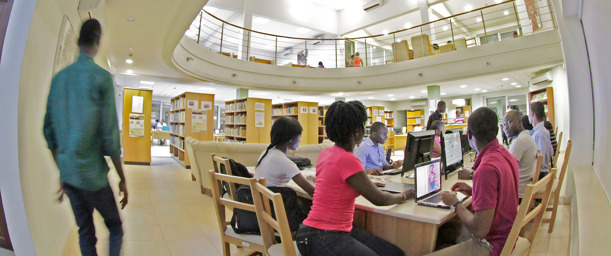

Computer Science
Refresh


The Computer department is found at the Nana Araba Apt Hall. This hall houses two classrooms and a hangout space. It can be found on the way to the Engineering block from the cafetaria.